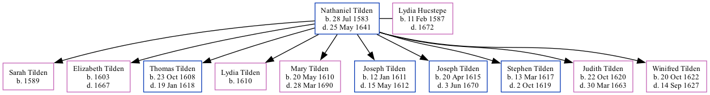

Nathaniel Tilden 1583 - 1641
[ Home ] | [ Surnames Index ] | [ Family History ] was born in Tenterden, Kent, England on Jul 28, 1583 and had 10 children with Lydia Hucstepe: Sarah, Elizabeth, Thomas, Lydia, Mary, Joseph, Joseph, Stephen, Judith and Winifred.
He died on May 25, 1641 in Scituate, Plymouth, Massachusetts, USA.
Children
- Sarah was born in 1589
- Elizabeth was born in 1603
- Thomas was born on Oct 23, 1608
- Lydia was born in 1610
- Mary was born on May 20, 1610
- Joseph was born on Jan 12, 1611
- Joseph was born on Apr 20, 1615
- Stephen was born on Mar 13, 1617
- Judith was born on Oct 22, 1620
- Winifred was born on Oct 20, 1622
Family Tree
Data (GEDCOM) maintained by Jay Weston Hannah, Omaha, Nebraska, USA.
Website generated by ged2site. Last updated on Jun 18, 2024.